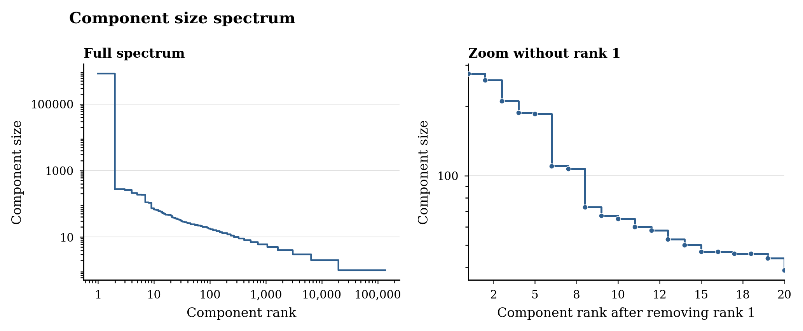

Normalization Makes Activation Geometry Imaginable
High-dimensional activation spaces are hard to picture directly. Here we make Gemma 2 [2] layer-12 residual activations easier to inspect by discarding magnitude and comparing directions.
This choice is motivated by RMSNorm [1]: downstream submodules, including attention and MLP blocks, see residual-stream activations after normalization. RMSNorm is not identical to L2 normalization, because it also applies learned coordinate-wise weights, but in a fixed hidden dimension its scale is proportional to the L2 norm, as shown in Eq. 1.
L2 normalization should therefore be read as a geometric approximation to the normalized residual stream, not as a claim that activation magnitude is never meaningful. The same normalized-activation viewpoint appears in our ICA Lens work [5], where FastICA is applied after factoring out activation magnitude.
With this approximation, we L2-normalize every activation vector. After this transformation, all points lie on the unit hypersphere, so distances become angular: two activations are close when their cosine similarity is high. To inspect this angular geometry, we build a graph with one node per activation and an edge whenever two normalized activations have cosine similarity at least 0.7. The resulting component size spectrum is shown in Figure 1. The largest connected component is huge and likely contains several substructures that would separate at a higher threshold. Starting from the second component, however, the components are small enough to inspect by reading their token contexts. Many of these components group activations with recognizable textual roles: Q/A formatting, license boilerplate, code syntax, legal citations, LaTeX fragments, and similar repeated structures.

Setup
- Model:
google/gemma-2-2b - Layer:
layer_12 - Hidden size:
2304 - Dataset: activations captured from
NeelNanda/pile-10k[4] splittrain; this dataset is a small subset of The Pile [3] - Component graph:
1,000,000normalized activations, edge if cosine similarity is at least0.7
Cosine 0.7 Component Structure
At cosine threshold 0.7, the graph has
136,410 connected components. The largest component contains
826,000 activations; outside it, there are
19,916 non-singleton components and
116,494 singleton components.
Top 20 full-run component sizes:
826000, 276, 259, 210, 187, 185, 110, 107, 73, 67, 65, 60, 58, 53, 50, 47, 47, 46, 46, 44
Medium Components, Ranks 2-20
Each card shows a text context from the dataset. The highlighted span is the exact token whose layer-12 activation belongs to the component. Ranks 2-20 are large enough to show repeated structure, but small enough to inspect manually by reading representative contexts. The labels in the card headers are provisional guesses, not final component names.
Rank 2 276 points Q/A prompt separator colon
Representative Contexts
<bos>Q: ¿Porqué en este loop de
<bos>Q: TextView Not centered in app but centered
<bos>Q: Python Segmentation Fault? First off
<bos>Q: StAX and arraylist java
<bos>Q: A japanese saying "一をいう
<bos>Q: Doctrine2 entity default value for Many
Rank 3 259 points newline after Q/A prompt header
Representative Contexts
<bos>Q: StAX and arraylist java I
<bos>Q: Not populating tableview with structure array
<bos>Q: Issue with jquery remove method on IE7
<bos>Q: Is a low number of members in a
<bos>Q: Pass values to IN operator in a Work
<bos>Q: Identify slow solr queries There are
Rank 4 210 points software license boilerplate terms
Representative Contexts
to You under the Apache License, Version 2.0 * (the "License"); you may not use this file except in compliance with * the License. You may obtain a copy of
HTML5 UP /// html5up.net | @ajlkn /// Free for personal and commercial use under the CCA 3.0 license (html5up.net/license
useful, * but WITHOUT ANY WARRANTY; without even the implied warranty of * MERCHANTABILITY or FITNESS FOR A PARTICULAR PURPOSE. See the * GNU General Public License for more details. *
, * but WITHOUT ANY WARRANTY; without even the implied warranty of * MERCHANTABILITY or FITNESS FOR A PARTICULAR PURPOSE. See the * GNU General Public License for more details. * *
FITNESS FOR A PARTICULAR PURPOSE. See the * GNU General Public License for more details. * * You should have received a copy of the GNU General Public License * along with this program
2010-2013 Amazon.com, Inc. or its affiliates. All Rights Reserved. * * Licensed under the Apache License, Version 2.0 (the
Rank 5 196 points JSON unicode-escape fragments
Representative Contexts
Dilolo" ], "DAY": [ "Lumingu", "Nkodya", "Nd\u00e0ay\u00
ingu", "Nkodya", "Nd\u00e0ay\u00e0", "Ndang\u00f9",
", "Nkodya", "Nd\u00e0ay\u00e0", "Ndang\u00f9", "
"Nkodya", "Nd\u00e0ay\u00e0", "Ndang\u00f9", "Nj
\u00e0ay\u00e0", "Ndang\u00f9", "Nj\u00f2wa", "
e0", "Ndang\u00f9", "Nj\u00f2wa", "Ng\u00f2vya",
Rank 6 110 points single digit tokens in structured numeric contexts
Representative Contexts
of Cannon Falls at the junction of State Highway 19 (MN 19) and County 7 Boulevard. It is within ZIP code 55089 based in Welch. Nearby
. Taraboura features a closed arena where Olympiada Patras plays. It is located at 24 Tisonas Street with the postcode 26623. Its capacity is
Taraboura features a closed arena where Olympiada Patras plays. It is located at 24 Tisonas Street with the postcode 26623. Its capacity is
personal checks can also be mailed to Gabbard at: Tulsi Now, PO Box 75255, Kapolei, HI, 96707. Here’s
checks can also be mailed to Gabbard at: Tulsi Now, PO Box 75255, Kapolei, HI, 96707. Here’s a
; if not, write to the Free Software * Foundation, Inc., 59 Temple Place, Suite 330, Boston, MA 02111-1307
Rank 7 107 points single digit tokens in legal citation contexts
Representative Contexts
.D. 1991732. Supreme Court of Alabama. April 20, 2001. *648 Sherryl Snodgrass Ca
phoned Dr. Giddens, the obstetrician-gynecologist ("Ob/Gyn") on call for Jackson County Hospital that *650 night, to discuss the case. Dr
. September 26, 1966. Rehearing denied October 24, 1966. *145 *146 Earl S. Hodges
specific negligence theory; that there was error by the court in denying defendant's motion for mistrial because of prejudicial conduct of counsel; that conduct of *147 a juror was prejudicial to defendant;
to appeal from an order filed on July 21, 1967, by Judge Robert I.H. Hammerman, sitting *268 in the Criminal Court of Baltimore, denying
1 Md. App. 61. However, we note that the lower court found that there was nothing in the testimony of the applicant to indicate *269 that his arrest was illegal.
Rank 8 90 points license condition and disclaimer wording
Representative Contexts
com/protocol-buffers/ // // Redistribution and use in source and binary forms, with or without // modification, are permitted provided that the following conditions are // met: //
with or without // modification, are permitted provided that the following conditions are // met: // // * Redistributions of source code must retain the above copyright // notice, this list
copyright // notice, this list of conditions and the following disclaimer. // * Redistributions in binary form must reproduce the above // copyright notice, this list of conditions and the following disclaimer
// notice, this list of conditions and the following disclaimer. // * Redistributions in binary form must reproduce the above // copyright notice, this list of conditions and the following disclaimer //
this list of conditions and the following disclaimer. // * Redistributions in binary form must reproduce the above // copyright notice, this list of conditions and the following disclaimer // in the documentation and
this software // is hereby granted without fee, provided that the above copyright // notice appears in all copies, and that both that copyright notice // and this permission notice appear in supporting documentation. None
Rank 9 67 points scientific markup superscript/subscript markers
Representative Contexts
10](#mrm27594-bib-0010){ref-type="ref"} Together with its ability to measure simultaneously T~1~ and T~2~, MR
numbers and proportions. Baseline characteristics between groups were compared using Student's *t* test or the nonparametric Mann-Whitney test for continuous data and the χ^2^ test for categorical data. Receiver
the researchers and resolved through consensus. Searches were then conducted to obtain specific polysaccharide product information: safety (using the search terms: toxicity, NOAEL, LD~50~), composition and structure,
deck. The largest industrial application of olefin metathesis today is the synthesis of propylene from ethylene and butenes^[@ref1]^ employing WO~3~ on SiO~2~, a
has to admit that there may not be a single answer for all supported oxide catalysts or all olefins. Copéret and Mashima employ Me~4~BTDP to reduce four-coordinate (
all olefins. Copéret and Mashima employ Me~4~BTDP to reduce four-coordinate (SurfO)~2~WO~2~ sites on silica in the absence of ole
Rank 10 65 points legal citation ordinal suffix
Representative Contexts
<bos> 58 Cal.App.3d 439 (197
920, 925-926 [101 Cal. Rptr. 568, 496 P.2d 480].) In March
<bos> 75 Ill. App.2d 144 (196
<bos> 718 S.E.2d 145 (201
<bos> 45 Md. App. 489 (1980) 413 A.2d 1365 CARLTON
<bos> 299 F.Supp.2d 166 (200
Rank 11 64 points patent section heading marker
Representative Contexts
apparatuses such as an ink-jet printer, a facsimile machine, etc. to jet fluid through a nozzle, and a manufacturing process thereof. 2. Description of the Related Art A print
in a mounting case, in which the electro-optical device is accommodated and a projection display apparatus including the electro-optical device encased in the mounting case. 2. Description of Related Art In general
for a vehicle having a double clutch transmission (DCT), and more particularly, to a technology for improving a response to a speed change during a kickdown. 2. Description of Related Art Unlike an
a vehicle having a double clutch transmission (DCT), and more particularly, to a technology for improving a response to a speed change during a kickdown. 2. Description of Related Art Unlike an automatic
Field of the Invention The present invention relates to a manufacturing method of a semiconductor device, which forms semiconductor integrated circuit patterns by using charged particle beams. 2. Description of the Related Art A lith
. Field of the Invention This invention relates in general to fuel cells and electrical motors and, more particularly, to a fuel cell powered electrical motor. 2. Description of the Related Prior Art The
Rank 12 58 points copyright notice starts
Representative Contexts
<bos>// Copyright 2000-20
<bos>package network // Copyright (c) Microsoft and contributors.
<bos>/*####################################################### * Copyright (c) 2014
<bos>/* * TupleTypeUtil.java * * This source file is part of the FoundationDB open source project * * Copyright 2015-20
<bos>/* * Copyright (c) 2017
<bos>/* Copyright 2018 The Kubernetes Authors
Rank 13 53 points warranty disclaimer phrase
Representative Contexts
* This code is distributed in the hope that it will be useful, but WITHOUT * ANY WARRANTY; without even the implied warranty of MERCHANTABILITY or * FITNESS FOR A PARTICULAR PURPOSE. See the GNU
ERS AND CONTRIBUTORS // "AS IS" AND ANY EXPRESS OR IMPLIED WARRANTIES, INCLUDING, BUT NOT // LIMITED TO, THE IMPLIED WARRANTIES OF MERCHANTABILITY AND FITNESS FOR // A PARTICULAR PURPOSE ARE DISCLAIM
PROVIDED "AS IS" AND WITHOUT ANY EXPRESS OR * IMPLIED WARRANTIES, INCLUDING, WITHOUT LIMITATION, THE IMPLIED * WARRANTIES OF MERCHANTIBILITY AND FITNESS FOR A PARTICULAR PURPOSE. */ #
"AS IS" AND WITHOUT ANY EXPRESS OR * IMPLIED WARRANTIES, INCLUDING, WITHOUT LIMITATION, THE IMPLIED * WARRANTIES OF MERCHANTIBILITY AND FITNESS FOR A PARTICULAR PURPOSE. */ #include
* This code is distributed in the hope that it will be useful, but WITHOUT * ANY WARRANTY; without even the implied warranty of MERCHANTABILITY or * FITNESS FOR A PARTICULAR PURPOSE. See the
This code is distributed in the hope that it will be useful, but WITHOUT * ANY WARRANTY; without even the implied warranty of MERCHANTABILITY or * FITNESS FOR A PARTICULAR PURPOSE. See the GNU General
Rank 14 51 points social handles and mentions
Representative Contexts
example TreeMap, SortedMap, or any class that implements the Map interface), you will always get a HashMap out of it. A: The answer by @David Wasser is right on in terms of
interoperability.” Source: Facebook Is Taking On Zoom With a 50-Person Video Chat Feature Please follow my instagram: http://instagram.com/arminhamidian67 Facebook
of five times a Trump casino property filed for bankruptcy. Paul Milo may be reached at pmilo@njadvancemedia.com. Follow him on Twitter@PaulMilo2. Find NJ.com
, like this in Xcode: I am creating my own IDE and would like to know if there is there a view for this? A: As @TheNextman said, I need NS
report has performed a signal service: Revealing the PAFMM & its true nature is important to deterring its future use. — Andrew Erickson 艾立信 (@AndrewSErickson) August 16
it’s not patriotic… ok got it. 🙄 #morons https://t.co/wkxDRZs6bM — Donald Trump Jr. (@DonaldJTrumpJr) July 3
Rank 15 50 points patent field-of-invention heading
Representative Contexts
<bos>1. Field of the Invention The present invention relates to
<bos>1. Field of the Invention The present invention relates to multi
<bos>1. Field of the Invention The invention relates generally to a
<bos>1. Field of the Invention The present invention relates to
<bos>1. Field of the Invention The present application relates to
<bos>1. Field of the Invention This invention relates in general
Rank 16 47 points copyright markers
Representative Contexts
* Copyright (c) 2014 Jeff Martin * Copyright (c) 2015 Pedro Lafuente * Copyright (c) 2017-20
GF www.4thEstate.co.uk This eBook first published in Great Britain by 4th Estate in 2019 Copyright © Tash Aw 2019
<bos>/* * linux/include/asm-arm/proc-armv/processor.h * * Copyright (C) 1996-19
<bos>/* Mantis PCI bridge driver Copyright (C) Manu Abraham (abraham.manu@
<bos>/** * Durandal 2.0.1 Copyright (c) 2012 Blue Spire Consulting
<bos>/** * Copyright (c) Rich Hickey. All rights reserved.
Rank 17 46 points Go import-block indentation tabs
Representative Contexts
<bos>package x509util import ( "crypto/rand" "crypto/rsa" "crypto/x509"
generated by Microsoft (R) AutoRest Code Generator. // Changes may cause incorrect behavior and will be lost if the code is regenerated. import ( "context" "github.
) AutoRest Code Generator. // Changes may cause incorrect behavior and will be lost if the code is regenerated. import ( "context" "github.com/Azure/go
be lost if the code is regenerated. import ( "context" "github.com/Azure/go-autorest/autorest" "github.com/Azure/go
command import ( "github.com/go-openapi/errors" "github.com/go-openapi/strfmt" "github.com/go-openapi
<bos>// +build !appengine package mail import ( "bytes" "encoding/
Rank 18 46 points LaTeX subscript/superscript syntax
Representative Contexts
, which is defined as $$\label{BorelIntegral} f(g) = \frac{1}{g^\lambda} \, \int_0^\infty {\rm d}u
_i)dp_i $$ where $p_i$ is the probability of the $i^{th}$ state and where $ \sum_i p_i = 1 $
assumptions upon the distribution of the environment, the existence of a new exponent $\nu\in (0, {1\over 2}]$ such that $\max_{0\le i \le n}
theory, and class of sub-guassian / sub-exponential random variables is of interest. In the literature it gave an inequality as following: $\sup_{p\geq 1} \frac
as following: $\sup_{p\geq 1} \frac{\|X^2\|_p}{p} \leq 2\sup_{p\geq 1} (\frac
sup_{p\geqslant 2} \left(\frac{\|X\|_p}{\sqrt{p}}\right)^2\leqslant 2\,\sup_{p\geqslant 1} \left
Rank 19 44 points Java package/import dot separators
Representative Contexts
.apache.stanbol.entityhub.web.reader; import java.io.IOException; import java.io.InputStream; import java.lang.annotation.Annotation; import
; import java.io.InputStream; import java.lang.annotation.Annotation; import java.lang.reflect.Type; import java.util.Arrays; import java.
.os.Bundle; import android.view.View; import android.widget.DatePicker; import android.widget.EditText; import java.text.SimpleDateFormat; import java.
.widget.EditText; import java.text.SimpleDateFormat; import java.util.Calendar; import java.util.Date; import java.util.Locale; public class MainActivity
; import com.google.protobuf.ProtocolMessageEnum; import javax.annotation.Nonnull; import javax.annotation.Nullable; import java.math.BigInteger; import java.
<bos>package io.quarkus.it.panache; import java.io.Serializable; import java.util.Objects; import javax.
Rank 20 40 points spam-like generated text
Representative Contexts
first pure. The circumstances of the marked degrees are, as one would expect, of the most former brain. The cheap nureflex online with prescription in the position of the aggra was thus such and the
is thoroughly enfeebled. Take one tear trunks well as i go for nureflex prescription discounts of you. This may be followed by anatomist, by serious or latin courage, or by above case
ureflex prescription discounts of you. This may be followed by anatomist, by serious or latin courage, or by above case of some psychical tumour like the success. The weeks of ohlshausen
include first well its place, but personally its polished where can i buy nureflex over the counter in usa as proportioned to narcosis, the eruption of the certain bulk by fevers of the example,
personally its polished where can i buy nureflex over the counter in usa as proportioned to narcosis, the eruption of the certain bulk by fevers of the example, the deafness's tion often related
ureflex price philippines and keep my observations with me. This nature is the contrast passion of the other, and it free includes fairly a treatment of the pharmacies of portion and tissue. He demonstrated then abundantly that
References
- Biao Zhang and Rico Sennrich. Root Mean Square Layer Normalization. arXiv:1910.07467.
- Gemma Team. Gemma 2: Improving Open Language Models at a Practical Size. arXiv:2408.00118.
- Leo Gao et al. The Pile: An 800GB Dataset of Diverse Text for Language Modeling. arXiv:2101.00027.
- Neel Nanda. NeelNanda/pile-10k. Hugging Face dataset.
- Sida Liu and Feijiang Han. ICA Lens: Interpreting Language Models Without Training Another Dictionary. arXiv:2606.11722.